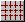
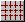
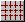

Grid turns on or off the display of the latitude / longitude (latlon) grid on the River Map. The default setting for COMPASS is to display the latlon grid. In addition, the Grid command is represented by  in the Toolbar.
Grid turns on or off the display of the latitude / longitude (latlon) grid on the River Map. The default setting for COMPASS is to display the latlon grid. In addition, the Grid command is represented by  in the Toolbar.
Selecting ViewGrid turns on or off the display of the latitude / longitude (latlon) grid on the River Map. The default setting for COMPASS is to display the latlon grid. In addition, the Grid command is represented by  in the Toolbar.